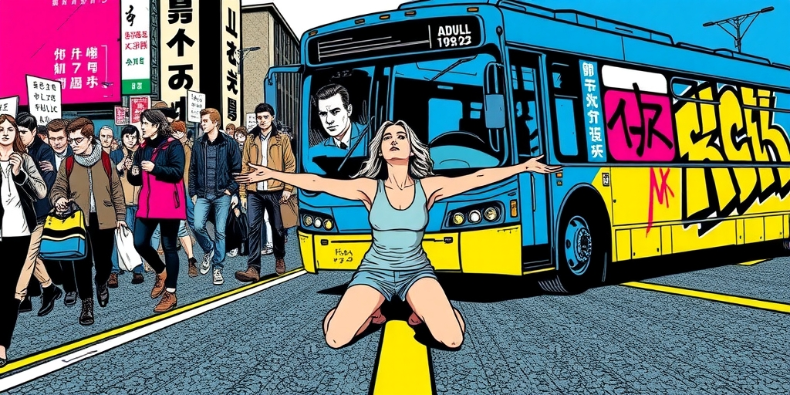
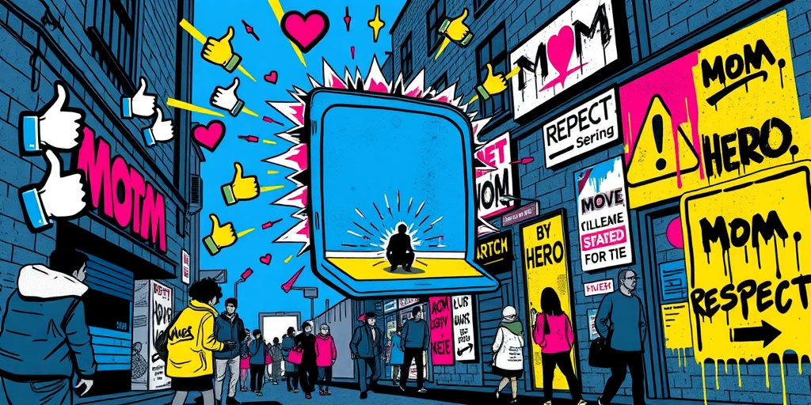
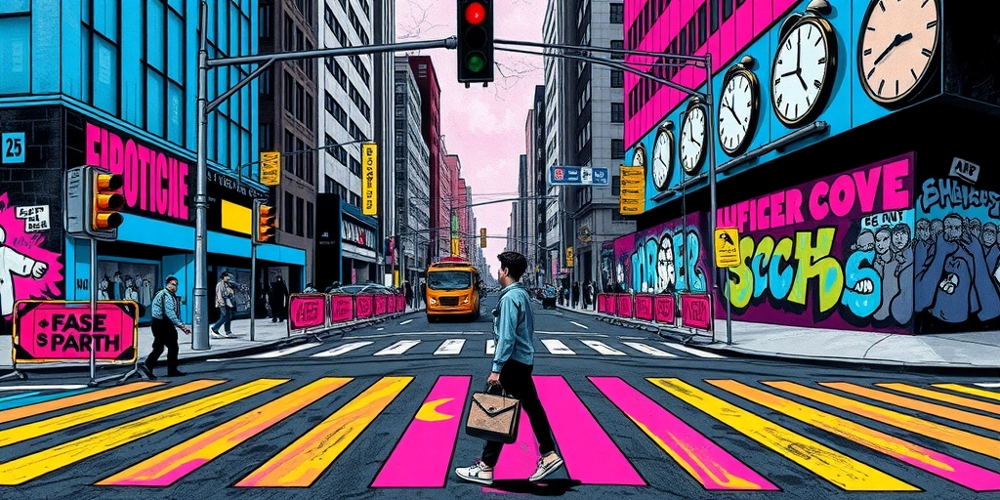
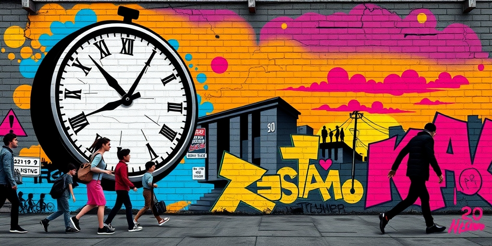

小汪老师的成长洞察 · 属于你的成长专栏
那个跪在公交车头前的母亲，膝盖砸地的声音比喇叭还响。她不是在保护考场里的孩子，她是在索要整条街的注视。高考护考已经从焦虑渗漏成一场集体表演，而拦路下跪，是这场表演里最精准的流量密码。

工地停工，广场舞歇业，KTV闭麦。这些习惯性的让步，社会已经忍了。但当一位家长因为一声鸣笛冲上马路、当街跪下时，护考的边界被一脚踩碎。公交车里坐着赶着上班的人，也许有人家里也有个高考生，也许那位司机昨晚刚陪孩子背完最后一道题。可此刻，全车人都成了这场演出的人肉背景。
很奇怪，没人问一句：凭什么？高考重要，但一车人的时间、司机的饭碗、整条街的交通，全部要给一个人的情绪让路。这种逻辑没有经过任何讨论，就默默成了某种道德正确。谁要是敢按一声喇叭，谁就是全社会的罪人。这不是保护，这是道德绑架。

拦车下跪这件事，具备完美的传播基因：牺牲、母爱、对抗、不公。四个要素凑齐，镜头一架，故事就自动写好了。社交媒体会迅速把它提炼成十秒的视频，配上一句“妈妈为了孩子什么都能做”。评论区里眼泪和点赞齐飞，没有人注意到，当事人脸上的表情除了焦急，还有一丝被看见的满足。
心理学上有个词叫“人来疯”。当一个小人物突然获得整个社会的注目和无限容忍，他会产生一种短暂的权力幻觉。平时没人多看一眼的路人甲，在高考这几天可以理直气壮地要求世界为自己按下暂停键。这种权力感会上瘾。一天之内，从无人知晓变成被警察保护、被媒体追访、被万千网友讨论，谁还舍得放手？真正冷静的学霸，蹲在菜市场也能背单词；真正焦虑的家长，把全世界的喇叭都静音也没用。

孩子是第一个买单的人。考场里的那张试卷，忽然变得不止是几道题。它承载了家族的命运、父母的尊严、还有那条街上所有人的沉默。一个十八岁的孩子，得有多强大的内心，才能从这种重压下正常呼吸？很多家长以为自己在给爱，实际上在往孩子背上摞石头。
社会也在买单。公共资源被无限征用：警车开道、交通管制、全民静音。一次高考，让无数陌生人的日常被迫中断。迟到的人被扣了工资，绕路的司机多烧了油，小区里不敢大声说话的邻居憋了一个夏天。这些成本没有收据，但它们真实存在。更深的代价还在后头——当这种道德绑架被一次次默许，人们会越来越习惯用“我的孩子”作为侵犯公共边界的理由。久而久之，容忍度会被耗尽，真正需要帮助的人反而得不到善意。

有两种可能。一种是学历贬值自然稀释这场狂热。当一纸文凭不再保证阶层跃迁，高考的信号作用减弱，护考的极端行为也会像春运焦虑一样，慢慢退潮。不再有人为了一套卷子拦公交，就像不再有人为了回家过年挤绿皮火车。另一种可能是内卷加剧，行为升级。从拦公交发展到封小区、锁单元门，甚至更激烈的公共冲突。每一次容忍都在喂养下一次更夸张的表演。
无论哪一种，问题的核心都没变：我们到底在守护什么？是一个孩子公平答题的权利，还是成年人无处安放的焦虑？如果有一天，护考的表演终于失去了观众，不是因为人们变得冷漠，而是因为大家终于看明白了——那个跪在车头前的家长，保护的不是考场里的孩子，而是自己那颗被忽视了很久的心。
写给你的话
你有没有发现，这几年拦公交、封小区、跟邻居吵架的新闻，事后都不了了之。没有人道歉，没有人反思。热度一过，所有人就像什么都没发生过一样，继续叫孩子“别紧张”。问题是，明年高考，又会有新的家长冲上马路，又会有新的视频刷屏。我们什么时候才能让这种关注度掉下来？当全社会都不再配合这场表演，那个想跪的人，膝盖就真的只是膝盖。
参考资料
• The Economic Times: Psychology suggests reason so many older parents won’t ask for help is a fear they’d never say aloud; moment they need their children more than their children need them, they stop being parent and bec (Jun 2026)
• The Economic Times: Psychology says adults who learned to depend on no one as children don’t grow into self-sufficient adults; they grow into people who confuse asking for help with weakness, and slowly build a life no o (Jun 2026)
小汪老师的成长洞察 · 属于你的成长专栏